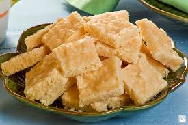

Receita de cocada de corte

Ingredientes:
- 1 lata de leite condensado
- 2 latas de açúcar (lata de leite condensado)
- 100 g de coco ralado
Modo de preparo:
- Misture tudo e leve ao fogo sempre mexendo pra não grudar, quando estiver com uma coloração bem amarela passando pra um marronzinho claro pode tirar do fogo.
- Unte uma forma com margarina e despeje a cocada na forma.
- Quando ela ainda estiver esfriando pegue uma faca e corte-a em quadradinhos.
- Quando esfriar totalmente é só desinformar.
- Caso queira fazer no microondas coloque na potência média alta por cerca de uns 16 minutos. E mexa pelo menos de 4 em 4 minutos.
- No final preste mais atenção porque sobe muito e tem que parar pra mexer.
- Depois é só colocar em uma forma untada e cortar em quadradinhos quando tiver esfriando.